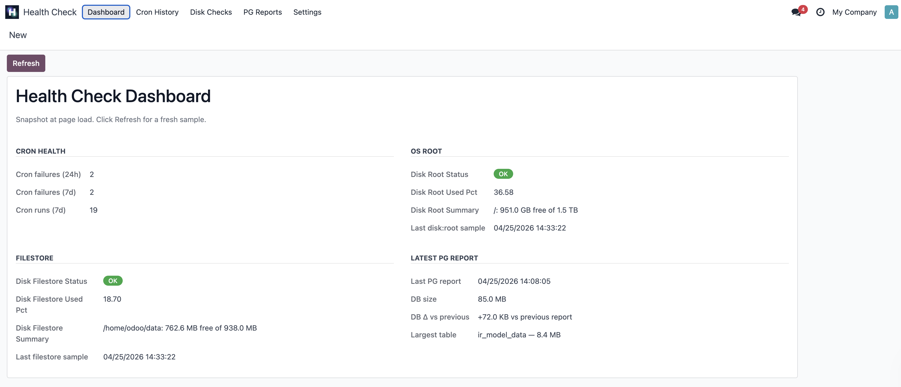
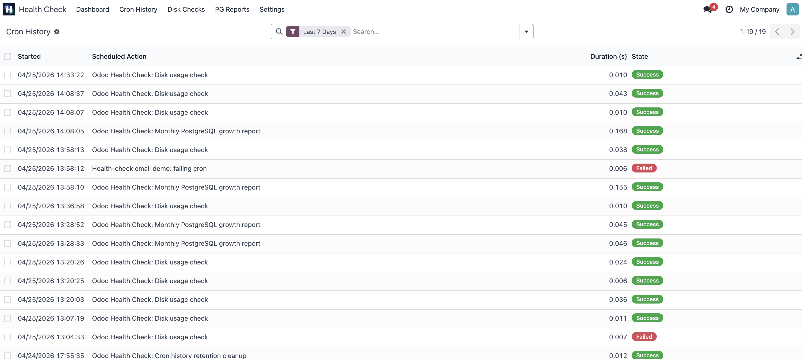
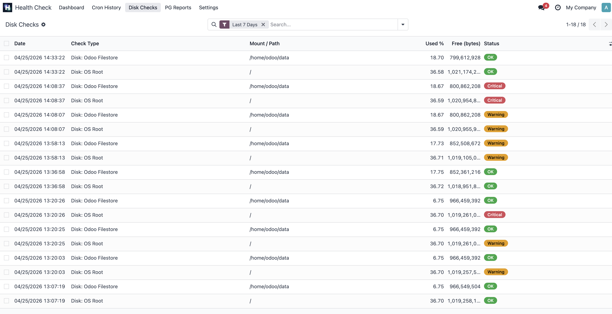
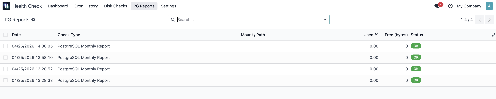
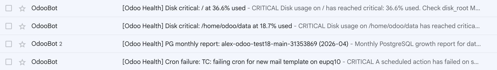
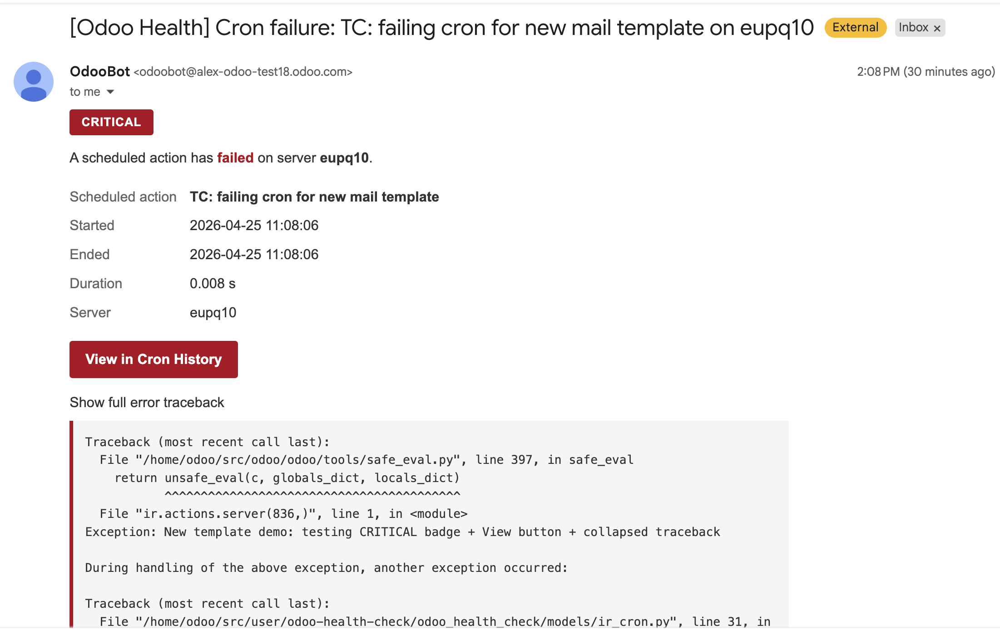
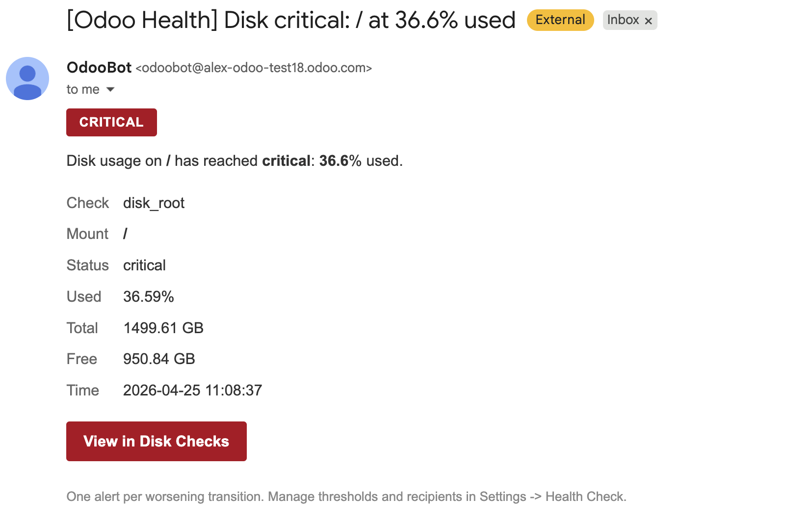
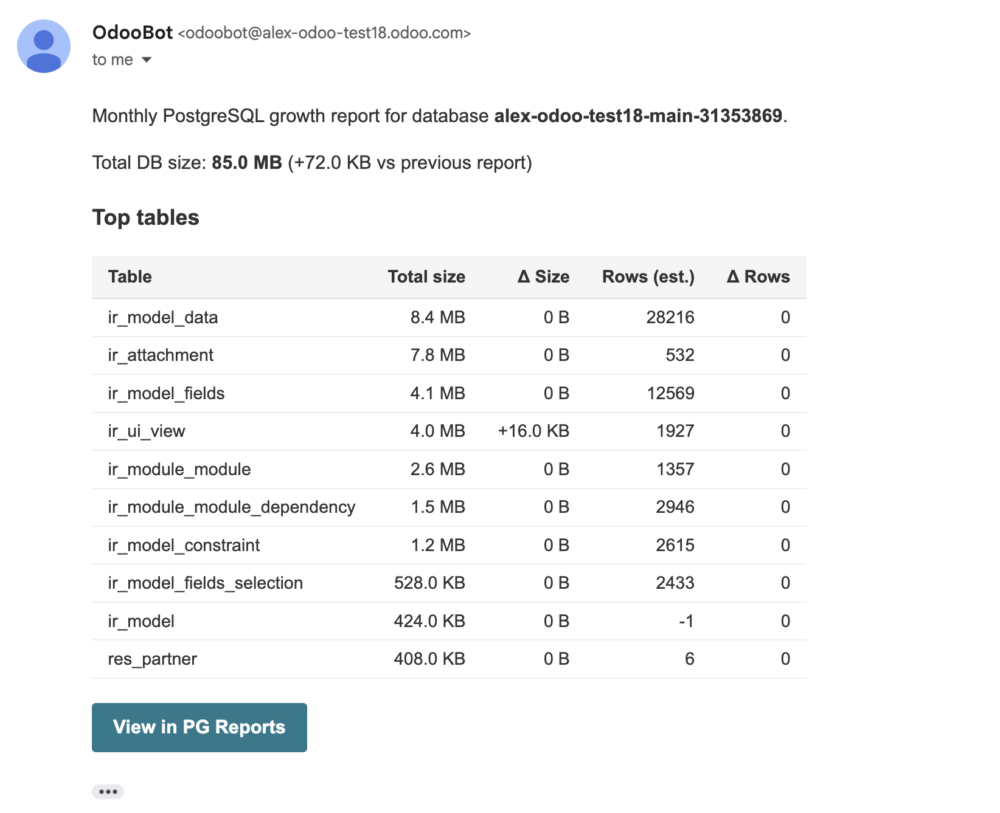
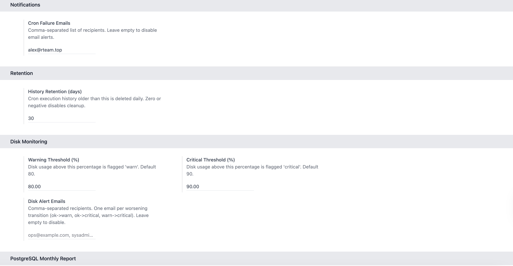

Localized in 8 languages: English · Русский · Українська · Deutsch · Español · Română · Polski · العربية
Self-hosted Odoo runs dozens of scheduled actions that you never see - until one quietly fails and a customer notices first. Odoo Health Check turns that black box into a visible audit trail and a small set of focused alerts. Install it, configure two email addresses, and the module runs the rest.
Odoo 18 LGPL-3 Free No external dependencies
Four tiles in one form view: cron failures in the last 24h and 7d, current disk usage on OS root and the Odoo filestore, and the most recent PostgreSQL growth report. No stored state - every open re-reads the underlying models. The Refresh button takes a fresh snapshot in one click.


Every scheduled action run is logged with start time, end time, duration
(millisecond precision via perf_counter), and execution
state. When a cron fails, the full Python traceback is captured and
attached to the row. The history table writes through an independent
database cursor, so a cron rollback never erases the audit trail.
Optional email alert on every failure with a one-click "View in Cron
History" deep link and the traceback collapsed inside a
<details> block - the inbox preview stays clean.
Hourly samples of OS root and the Odoo filestore mount via
shutil.disk_usage. Each sample stores total / free bytes,
used percentage, and a status badge - OK, Warning, Critical, or Error.
Thresholds are configurable per environment.
Email alerts fire only on worsening transitions (ok → warn, ok → critical, warn → critical). Steady state and recovery never notify - no hourly spam. A measurement error between two healthy samples is skipped when computing transitions, so a flaky filesystem read doesn't generate false alarms.


On the 1st of each month at 08:00, a snapshot of the top-10 tables by total relation size is captured (including indexes and TOAST). The report compares against the previous month and emails the recipients an HTML digest with size, Δ size, row count, and Δ rows per table, plus total database size delta.
Row counts use pg_class.reltuples (PostgreSQL's own
statistics from the last ANALYZE) - fast on multi-million-row
tables, never times out, accurate enough for trend reports.
Each alert email opens with a colour-coded severity badge, the key
metadata in a tight table, and a one-click button that deep-links into
the corresponding record in Odoo. Long content (like a Python traceback)
is collapsed inside a <details> block so the inbox
preview stays readable.


Cron failure - red CRITICAL badge, metadata table, View in Cron History button, traceback under a "Show full error traceback" toggle

Disk alert - amber WARNING or red CRITICAL badge depending on threshold crossed, mount + used % + total/free in GB, View in Disk Checks button

PG monthly digest - top-10 tables with size, Δ size, rows, Δ rows columns; total DB size delta vs the previous report; View in PG Reports button
Field labels, settings help text, search filters, dashboard tiles, action menus, cron names, and the three alert emails are translated to seven additional languages. Translations apply automatically based on each user's Odoo language preference - no extra configuration.
English · Русский · Українська · Deutsch · Español · Română · Polski · العربية
en · ru · uk · de · es · ro · pl · ar
Open Health Check → Settings after installation and fill in whichever fields are relevant. Every email address is independent - you can route cron failures to engineering, disk alerts to sysadmins, and the PG digest to a DBA, all from one screen.

base and mail.base.group_system (admin only). No public HTTP endpoints, no external network calls.ir_cron_history, health_check_result). Retention cleanup keeps both bounded.Test coverage: 60+ unit and integration tests covering every cron path, every email transition, every threshold edge case, and the dashboard snapshot logic.
pg_class.reltuples, accurate enough for trends but not for billing or auditIf you need any of the above, we are working on a Pro variant - get in touch.
Source code, issues, and feature requests: github.com/alex-odoo/odoo-health-check
Built and maintained by Rteam, an Odoo Enterprise consulting agency. rteam.agency
Verification guide: TESTING.md - a 10-minute walkthrough to confirm everything works on your install.